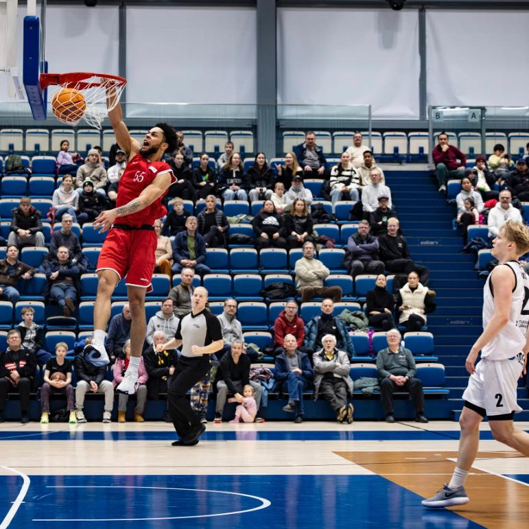

William Kondrat is a 6’8” forward from Brooklyn, NY who has built his game on production, toughness, and a relentless motor. After a standout college career at D’Youville, where he earned All-Conference honors averaging 21.5 points per game, Kondrat took his scoring-and-rebounding game to Europe - posting double-digit nights in Poland’s I Liga before erupting for 19.1 points and 9.7 rebounds per game in Finland, where he led his team game after game and dropped 30-point, double-double performances against the league’s best.
A physical interior presence who finishes through contact and dominates the glass at both ends, Kondrat plays bigger than his frame and brings energy, rebounding, and double-figure scoring every time he steps on the floor. A 2024 NBA G-League draft pick by the Grand Rapids Gold, he is now healthy and back in form after a season out with injury - and available for 2026-27.
Finnish 1st Division A
Want to see your highlights on TGN?
Submit a Request